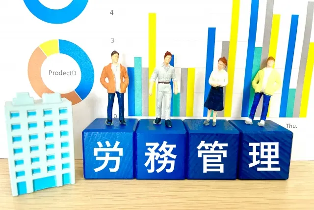
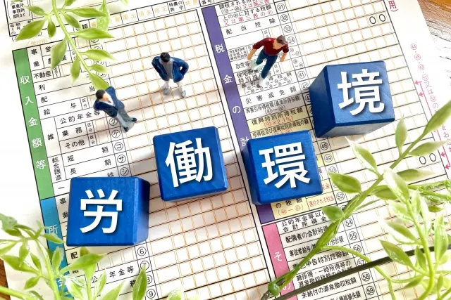

【初心者向け】労務管理の5つの課題と改善策を徹底解説


人事部に配属され、上司から労務管理の課題解決を命ぜられたものの、改善策がわからず悩んでいる人事初心者もいるのではないでしょうか。この記事では、人事として30年間労務管理に携わってきた筆者が「5つの課題と改善策」を初心者向けにわかりやすく解説します。
最後まで読めば考え方が理解できるので、課題に直面している人や、これから労務管理に携わる人はぜひ参考にしてください。
労務管理の概要
「労務管理」という言葉は知っているけれど「人事管理とどう違うのか」や「そもそもの目的」を詳しく知らない人も多いのではないでしょうか。はじめに、労務管理の具体的な業務内容や目的・人事管理との違いなどを解説します。
- 労務管理とは
- 労務管理の目的
- 労務管理の仕事内容
- 人事管理との違い
労務管理とは
企業経営には「人・物・お金・情報」の4つの資源が必要です。労務管理は、その中で「人」に関する部分の業務にあたります。簡単に言うと「労働関連の法令順守や従業員の労働環境づくり」などです。人事領域業務のひとつで「組織全体の視点」から、労働力の管理に重きを置いています。
「物・お金・情報」の3つがあっても「人」が働きやすい環境でなければ、企業経営は成り立たちません。環境を整えるための労働条件や勤怠管理、福利厚生や労働安全衛生など「従業員が働く上で不可欠な業務」が労務管理だと言えます。
現状の人材を有効に活用し、組織の目標や業績向上に貢献するのが、労務管理担当者の役割です。
労務管理の目的
労務管理の目的は、人材資源を活用するために「従業員がモチベーションを保って働ける環境を整える」ことです。職場環境の改善や、労働に関する規則の整備を主な目的としています。また、法令遵守や労働災害予防など、企業の社会的責任を果たすことも目的のひとつです。
総務部もしくは人事部が担当するケースが一般的で、両者は密接な関係があります。適切な労務管理で労働環境や健康維持に配慮した環境を構築すれば、従業員のモチベーションも上がり、生産性の向上につながるでしょう。
逆に、労務管理を疎かにすれば法令違反や従業員の退職につながり、悪質な場合は外部に悪評が拡散され、企業価値や信頼が失われる原因になりかねません。
労務管理の仕事内容
労務管理は「法令」や「就業規則」に基づいた業務です。企業経営に不可欠な事務作業で、人材資源の活用において重要な役割を担っています。
代表的な業務は以下です。
- 雇用手続き関連（雇用契約書・各種保険加入）
- 勤怠管理や給与計算
- 従業員の健康管理
- 法令三帳簿（労働者名簿・賃金台帳・出勤簿）の管理
- 職場環境や業務内容の改善
- 就業規則の改定及び運用
業務内容は多岐にわたりますが「従業員が能力を最大限に発揮できるための適切な管理」が必要となります。また、法令で義務付けられているものもあるため、法令違反にならないようにしなければなりません。
人事管理との違い
人事管理も「人」に関する部分の業務である点は同じですが「視点」が異なります。人事管理は、効率の良い人材資源を活用するために「人材（個人）に関する視点」で業務にあたります。具体的には「採用や教育・人事異動」などです。
労務管理は、制度改革や労働環境の整備など、組織で「人材を活用」するための業務が主となります。一方、人事管理は採用や育成、評価など、個人に着目し「生産性を向上」させるための業務が主です。
まとめると以下のような違いがあります。
| 人事管理 | 労務管理 | |
|---|---|---|
| 視点 | 従業員（対個人） | 会社（対組織） |
| 業務内容 | 採用 人材育成・教育 人員配置 人事評価 | 労働環境の整備 社会保険や福利厚生の手続き 安全衛生管理 労働組合との折衝 |
違いを理解した上で業務に取り組みましょう。
近年の労務管理の課題は5つ

労務管理は、労働状況を把握・管理し、不備があれば改善するのが主な業務です。従業員が働きやすい環境を作らなければトラブルになる可能性もあり、会社と従業員の信頼関係を保てません。
労務管理の課題は企業によってさまざまですが、中でも多くの企業において注力すべき近年の課題を5つ紹介します。
- 雇用形態の多様化に対応できていない
- 有給休暇の取得率を上げられない
- 勤務時間の適正管理ができていない
- 法改正に迅速な対応ができていない
- 情報が多く管理が煩雑になっている
1. 雇用形態の多様化に対応できていない
2019年4月1日から順次施行されている「働き方改革を推進するための関係法律の整備に関する法律」（働き方改革関連法案）により、雇用形態が多様化しています。たとえば、在宅勤務など場所を選ばず仕事ができることや、フレックスタイムで自分の都合に合わせて出社できるなど、柔軟な勤務スタイルを選択できるようになりました。
また、労働時間の見直しや勤務時間が柔軟になり、これまで働けなかった人材の採用も可能になるなど、雇用環境も大きく変化しています。しかし、会社の対応が間に合っていないため、従来の働き方しかできないケースも少なくありません。
時代の変化に沿った働き方に対応できないままだと、優秀な人材確保ができないばかりか、従業員が不満を抱き離職してしまう恐れもあります。従業員のモチベーション向上や、定着率のアップにつなげるためにも早急な対応が必要です。
2. 有給休暇の取得率を上げられない
日本企業は有給休暇の消化率の低さが問題視されていたことから、働き方改革関連法案により、労働基準法が改正され「年間5日の有給休暇の取得」が義務化されました。その効果もあり、厚生労働省が発表した「令和5年就労条件総合調査の概況」によると、労働者1 人平均は 17.6 日で、取得率は 62.1％となっており過去最高となっています。
しかし「人員不足で休めない」や「有給休暇が申請しづらい」などの理由で、5日の強制付与以外は取得できていない企業は少なくありません。特に中小企業など従業員が少ない企業ほど取得率は上がらない傾向があります。「いかに従業員に有給休暇を取ってもらうか」は企業の大きな課題です。
3. 勤務時間の適正管理ができていない
これまでも勤怠の把握はしなければなりませんでしたが「客観的な把握」までは義務付けられていなかったため、サービス残業が発生する原因のひとつになっていました。しかし、今回の法改正で「客観的な形での把握」が義務化されています。
たとえば、仕事でパソコンを使用した時間なども、正確な把握（履歴）が求められるのです。特に、在宅ワークの場合は、会社側からは勤務状態が見えないため把握できません。また、勤務形態が増えたことにより、従来のタイムカードへの打刻や紙での管理が難しくなってきています。
４. 法改正に迅速な対応ができていない
労働に関する法改正は毎年のように実施されており、その都度対応が必要です。人手不足や時間がかかるため、手が回らず後回しになっている企業も少なくありません。対応が遅れれば法令違反となり、企業活動に影響を及ぼすリスクがあるため、迅速な対応が求められます。
また、就業規則を変更した場合は、必ず従業員に周知しなければなりません。 周知を怠たれば「周知義務違反」となり、是正勧告や指導、罰金が科される可能性があるので注意が必要です。
5. 情報が多く管理が煩雑になっている
労務管理は「住所」や「銀行口座」「マイナンバー」など多くの個人情報を扱います。その他にも「求人への応募書類」や、「入退社に関する書類」なども管理しなければなりません。情報が多くなれば、その分管理も煩雑になります。
さらに、「セキュリティ対策」を万全にする必要があります。情報の漏洩が起これば、被害者からの訴訟問題に発展し賠償責任を負うことや、企業の信頼を失いブランドイメージに大きな影響を与えかねません。
労務管理の課題5つの改善策
労務管理の課題には早期の着手が必要です。時代の流れへの対応や、法令に沿った企業運営をしなければ、今後は人材資源を集めることが難しくなるでしょう。できる限りの無駄をなくし、柔軟な対応を行うための5つの改善策を紹介します。
- リモートワーク制度の導入
- 時間単位での有給休暇付与制度の導入
- 労働時間の見える化による勤怠把握
- 法改正に沿った就業規則や社内規定のメンテナンス
- 情報の一括管理と漏洩リスクへの対応
1. リモートワーク制度の導入
従来は、決められた時間にオフィスに出社し、決められた時間まで勤務するスタイルでした。この働き方では、距離や交通手段の問題で出社が困難な人や、家庭の事情で決まった時間に出社できない人などは就労が困難です。
リモートワーク制度を導入することでこのような制約がなくなり、広範囲のエリアからの採用や柔軟な勤務スケジュール設定ができるため、人材を集めやすくなります。また、既存の従業員についても、通勤時間の削減や好きな場所での業務が可能になれば、モチベーションや業務効率が向上し企業の業績UPにつながるでしょう。
制度の導入にあたって、就業規則の変更もしくは新たな作成が必要な場合もあります。作り方は厚生労働省の「テレワークモデル就業規則」を参考にしてください。また、従来型のタイムカードの打刻が難しいため、スマホでの勤怠打刻を導入したり、パソコンの稼働時間を把握したりする必要があります。
2. 時間単位での有給休暇付与制度の導入
有給休暇は1日単位で取得するのが原則ですが、労使協定を締結し就業規則を変更すれば、年5日の範囲内で「時間単位での取得」が可能です。制度の導入によって、忙しくて丸1日は取りにくい人でも取りやすくなるメリットがあります。
ただし、従業員からの申請によって与えることになっているため、計画的な強制付与はできないので注意が必要です。また、時間単位で取得するため、賃金の計算や取得実績の管理は複雑になります。効率良い適正な管理には、勤怠管理システムの導入などが有効です。
3. 労働時間の見える化による勤怠把握
働き方改革関連法案により「残業時間の上限規制」が施行されています。しかし、従業員が「どれくらい残業しているのか」を正確に把握できていなければ管理はできず、残業代の未払いにもつながりかねません。
勤怠の状況把握には、一目でわかるよう「労働時間の見える化」をしましょう。ポイントは人事だけでなく、従業員も簡単に勤務状況がわかるようにすることです。
勤怠を「見える化」すると、自分の労働時間を意識するきっかけになり、自発的に残業時間を調整するようになります。スマホでも簡単に確認できるようにするとより効果的です。
4. 法改正に沿った就業規則や社内規定のメンテナンス
労働基準法などの労働関連法は定期的に改正されています。就業規則や社内規定は、法令が改正される度に見直しをしなければなりません。対応が遅くなったり、法改正に気づかなかったりした場合、知らないうちに法令違反を犯しているケースもあります。
特に、残業や休暇に関する法令などは勤怠管理に直結するため、即時の対応が必要です。
いち早く法改正の情報を把握し就業規則をメンテナンスするために、厚生労働省のホームページなどの情報源は定期的にチェックしましょう。
5. 情報の一括管理と漏洩リスクへの対応
従業員の増加などで、個人情報や入社関連の情報は増え続けます。従来のように紙で保管する方法では、災害や盗難などで損失や破損しやすく、保管スペースも必要です。ロッカーのセキュリティ対策を講じていても、物理的な制約があり機密性は低くなります。また、必要な情報を探す際も手動で行わなければなりません。
これらのリスクを踏まえ、デジタルデータへの移行が進んでいます。ほとんどをオンラインで文書を取り交わすケースも少なくありません。一方で情報量が増え、それに伴う情報管理の必要性が高まっています。
情報はパソコンに保存せずクラウド上で一括で管理し、アクセスできる者を限定するなど、情報漏洩リスクを最小化することが重要です。
課題解決には労務管理システムの導入が有効
労務管理の課題解決には人手と時間を要するものが多く、なかなか改善が進まないケースも多くあります。しかし、労務管理システムを導入すれば、解説してきた課題をスムーズに解決できます。情報の一括管理やアクセス制限などのセキュリティ対策などはもちろん、リモート環境でも利用可能なため、在宅勤務にも対応し労働時間の確認も容易です。
勤務時間や時間単位での有給休暇取得などは自動的に集計されるため、複雑な勤務体系でも事務作業が効率化できます。また、法令の改正があればシステムに反映されるので、対応ミスや漏れがなくなり、少ない人員でスピーディーな労務管理が可能です。
「どのような労務管理システムが必要かわからない」といった企業には「ミツモア」をおすすめします。ミツモアでは、質問に答えるだけでぴったりの製品とプランを診断してくれます。約2分で診断可能です。この機会に労務管理システムの導入を検討してみてください。
採用・人事やAI活用のご相談を受け付けています
記事の執筆、採用支援、AI導入支援など、まずはお気軽にご相談ください。
ご相談はこちら